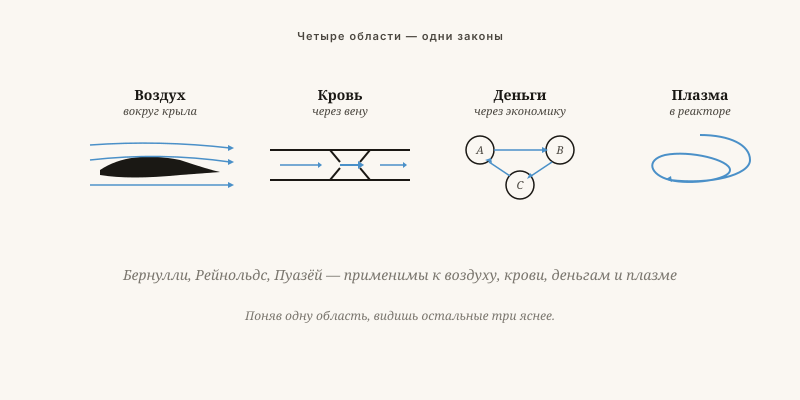

Всё течёт — мать всех наук
Воздух, кровь, деньги, идеи и плазма подчиняются удивительно схожим законам. Почему этому нигде не учат?
Якобус ван Мерксштейн · 10 мин чтения · 23 мая 2026

Природа течений — всё течёт
Четыре области, одна математика
Воздух вокруг крыла. Кровь в артерии. Деньги в экономике. Идеи в обществе. Плазма в термоядерном реакторе. Всё это — потоки, и потоки подчиняются законам, удивительно похожим друг на друга, независимо от среды.
Почему этому не учат? Потому что образование разделено по предметам. Студент физики изучает уравнения Навье — Стокса. Студент экономики — спрос и предложение. Студент медицины — сердечный ритм и кровообращение. Никто не узнаёт, что это одна и та же математика.
Это не лень — это институциональная проблема. Генералистов не продвигают по службе. Специалистов — продвигают.

От судовых покрытий до демократии — один и тот же принцип
SeaSkin — не яд, а гладкость
Мои покрытия снижают сопротивление корпуса судна, поддерживая гладкость пограничного слоя. Обрастание нарушает этот слой. Обычное решение: яд в краску. Моё решение: поверхность, на которой обрастание не хочет закрепляться, — цвиттерионная и силиконовая химия, воспроизводящая то, что кожа акулы делает уже миллионы лет.
Что это имеет общего с демократией? Тот же принцип. Общество, в котором «обрастание» — паразитизм, регуляторная нагрузка, лоббизм — не может закрепиться, движется быстрее и потребляет меньше.
Не насилием и не исключением, а иной поверхностью. Прозрачное, простое, предсказуемое управление гладко на наноуровне. Тот, кто пытается паразитировать на нём, соскальзывает.
Четыре закона гидродинамики за пределами своей области
Скорость снижает давление
В воздухе: подъёмная сила под крылом. В организации: чем быстрее циркулирует информация, тем меньше иерархического давления требуется для принятия решений.
Выше предела — хаос
При определённой скорости любой поток становится турбулентным. В воде, в воздухе, в структуре совещаний: выше определённого размера системы разваливаются в хаос. Сильнее давить не помогает — нужно менять масштаб.
Малая закупорка — большие потери
Поток обратно пропорционален четвёртой степени радиуса. Вдвое уменьшить диаметр — поток падает в шестнадцать раз. Небольшое усиление регулирования непропорционально дорого стоит в экономическом росте.
Что входит, должно выходить
В крови: меньше кровотока — накопление. В деньгах: капитал, который не может вытечь, образует пузыри. В идеях: общество, лишённое возможности высказаться, в конечном счёте взрывается.
Каждая система имеет собственную частоту
Воздух при 1 бар содержит молекулы, сталкивающиеся каждые 60 наносекунд. У человека — резонансная частота 1–2 Гц. У здания, моста, организации — у каждой системы своя частота.
Кто настраивает две системы на одну длину волны, ускоряет передачу энергии и информации. Учительница, не находящая контакта с классом, работает на неверной частоте. Предприниматель, не находящий инвестора, — тоже. Решение обычно не в том, чтобы «посылать сильнее», а в том, чтобы «посылать другой сигнал».
Не единственная теория, а оптика — сквозь которую мир сам по себе становится более связным.
Всё течёт — мать всех наук
Воздух, кровь, деньги, идеи и плазма подчиняются удивительно схожим законам. Почему ни одна школа этому не учит?
Воздух вокруг крыла, кровь в артерии, деньги в экономике, идеи в обществе, плазма в термоядерном реакторе — всё это потоки, и потоки подчиняются законам, которые поразительно схожи вне зависимости от среды. Почему этому не учат? Потому что образование разделено на предметы. Студент физики изучает уравнения Навье-Стокса. Студент-экономист — спрос и предложение. Никто не узнаёт, что это одна и та же математика. Широких специалистов не продвигают по карьерной лестнице. Узких — продвигают.
Четыре закона, работающие за пределами своей дисциплины: Бернулли (скорость снижает давление — в организации: чем быстрее циркулирует информация, тем меньше иерархического давления требуется); Рейнольдс (выше определённого порога любой поток становится турбулентным — давить сильнее не помогает; нужно изменить масштаб); Пуазейль (уменьшите диаметр вдвое — поток упадёт в шестнадцать раз; небольшое регуляторное усложнение стоит непропорционально дорого экономическому росту); и принцип непрерывности (что входит, то должно выйти — капитал, который не может оттечь, образует пузыри).
Пример SeaSkin делает это наглядным: покрытие удерживает пограничный слой корпуса судна гладким без биоцидов. Тот же принцип применим к управлению: прозрачная, простая система гладка на нано-уровне. Тот, кто пытается жить на ней паразитически, соскальзывает с неё.
Частота
У каждой системы есть своя частота. Молекулы воздуха при атмосферном давлении сталкиваются каждые 60 наносекунд. Учительница, которая не достигает своего класса, работает на неверной частоте. Решение редко состоит в том, чтобы «передавать громче» — почти всегда нужен «другой сигнал». Гидродинамика — не одна из многих теорий, а очки для чтения мира, через которые он сам собой обретает связность.